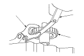
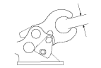

M/T Reverse Shift Fork Clearance Inspection
Measure the clearance between reverse idler gear (A) and the reverse shift fork (B) with a feeler gauge (C). If the clearance is more than the service limit, go to
Step 2
.
Standard:
1.30 − 1.90 mm (0.051 − 0.075 in.)
Service Limit:
2.5 mm (0.098 in.)

Measure the width of the reverse shift fork.
If distance is not within the standard, replace the reverse shift fork with a new one.
If distance is within the standard, replace the reverse idler gear with a new one.
Standard:
13.5 − 13.8 mm (0.531 − 0.543 in.)
